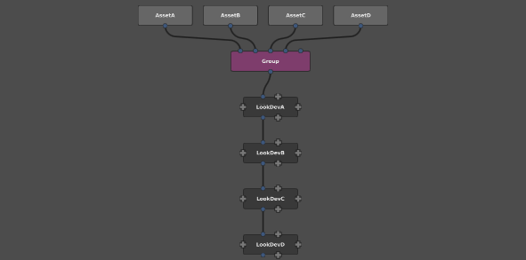
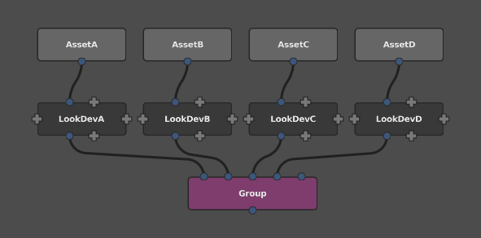
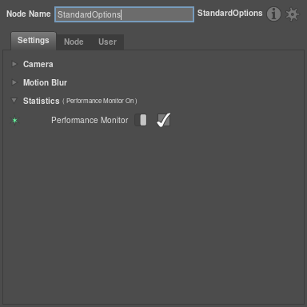

Managing Complexity¶
Gaffer is designed to support huge scenes gracefully, by deferring the generation of each location until requested by the user or renderer. It is also designed to be flexible, affording the user a great deal of control in how scenes are generated. These two goals are somewhat at odds; this document discusses the performance implications of various choices a user might make, and provides some guidelines for keeping Gaffer running smoothly.
Complexity and Node Graph Structure¶
Tip
Apply look development to models before grouping them into a single scene.
A very rough estimate for the complexity of a Gaffer scene can be made by considering the number of locations in the scene, and the number of nodes through which each location passes. For instance, we might say that 10 locations passing through 10 nodes (10 * 10 = 100) is roughly equivalent to 20 locations passing through 5 nodes (20 * 5 = 100). When we consider that most scenes will be comprised of a number of assets each with an associated look (shaders and other render attributes), we can use this knowledge to structure our node graphs for best performance.
Let’s consider a scene containing 4 assets, with the model for each imported into Gaffer via separate SceneReader nodes. Each asset will also have a look development setup to be assigned. This will be brought into Gaffer via a Reference node per asset, and placed downstream of the SceneReaders. This presents us with the two options for structuring the node graph illustrated below.
We can either group the models into a single scene graph and then apply the look development in series...

...or we can first apply the look development and then group.

For the sake of simplicity, let’s assume that each model contains 1000 locations, and each look development setup contains 100 nodes. Now we can estimate the load placed on Gaffer by each of the graphs above.
groupingFirst = locations * nodes
= (locationsPerModel * numberOfAssets) * (nodesPerLook * numberOfAssets)
= (1000 * 4) * (100 * 4)
= 4000 * 400
= 1600000
groupingSecond = locations * nodes
= locationsPerModel * numberOfAssets * nodesPerLook
= 1000 * 4 * 1000
= 400000
That’s a whopping factor of 4 difference in load, just from some simple restructuring of the graph. What’s more, it’s no coincidence that 4 is the number of assets we have - if we had 100 assets we would be looking at a factor of 100 difference in load between our two options. To state things more formally, grouping second has linear complexity with respect to the number of assets, and grouping first has quadratic complexity. Informally, that means that grouping second is a dramatically better approach, and should be the first consideration when structuring large graphs.
Note
Of course, much of the flexibility and power Gaffer provides comes from the ability to perform edits on the entire scene after grouping has been performed - this is invaluable when making edits on a per-shot or per-sequence basis. The guideline above isn’t intended to discourage this at all, and is intended to apply to the use of published models and lookdev only.
PathFilter Wildcards¶
Tip
Limit the use of '...'.
The '...' wildcard in PathFilter expressions means “match any number of names”. So, '/world/.../house' matches '/world/village/house' as well as '/world/country/state/metropolis/neighbourhood/street/house'. This can be very useful, but it comes at a price. Certain operations in Gaffer require the scene hierarchy to be searched for all matches below a particular location. As you might guess, the presence of '...' forces this search to go ever deeper, just in case a child (or a child of a child of a child) might match. For large scenes, this can become very expensive.
The most painful expression possible is '/.../something', because it literally says “search the entire scene”. Although this can be necessary at times, experience has shown that such expressions are often used where a more precise form could do the same job with better performance. For instance, if it is known that all the matches are within a single asset, an expression such as /AssetA/.../something will limit the search to that asset only. Alternatively, if it known that all the matches are at a specific depth, a pattern such as /*/something or /*/*/something will yield the same results without needing to visit deeper locations. Small changes such as this can have a significant impact on scene performance, so it is always worth taking the time to make expressions as precise as possible.
Note
It’s actually a slight simplification to say that '...' is always costly. In fact, for
simple nodes such as ShaderAssignment and Attributes, the performance implications are negligible.
This is because such nodes can operate on a single location in isolation, and never need to consider
the big picture of the scene as a whole. Generally, it’s only hierarchy-altering nodes such as Prune
and Isolate where '...' is particularly performance sensitive. Despite this, it’s best to cultivate a general wariness surrounding '...', and it’s always best to make PathFilter expressions as precise as possible in any case,
to document your intentions to anyone who might inherit the setup.
Expressions¶
Tip
Prefer OSL to Python in expressions.
Although Python is a great language, it is not the quickest, and it has shockingly bad support for multithreading. In contrast, OSL is pretty quick and multithreads well. In situations where an expression will be evaluated frequently (maybe once per scene location), the equivalent OSL expression can give significantly improved performance over Python. For instance, tests using a per-instance expression for 100,000 instances yielded a 2x speedup in total scene generation time when using a single thread, and a 16x speedup when using 12 threads.
That’s not to say that Python should be avoided entirely of course. Python provides access to databases, the filesystem and all of the Gaffer and Cortex modules, providing far more flexibility than OSL. Typically, if a Python expression doesn’t access context["scene:path"] or another frequently changing variable, Gaffer’s caching mechanisms will ensure that the expression will be run only once, keeping everything running as smoothly as possible. But, if in doubt, use OSL.
Instancing¶
Tip
Treat the Instancer with care!
The Instancer is capable of generating a huge number of locations, and this can obviously have a performance impact. Because it also supports per-instance variation through the use of expressions on the upstream instance graph, it must actually evaluate the instance graph individually for every given instance. In fact, Instancer is a particularly misleading name in this case.
Bearing in mind the rough complexity metric of numberOfLocations * numberOfNodes from above, we can arrive at these guidelines :
- Use a minimum of nodes to generate the input to the
instanceplug. Consider baking the instance graph to a cache and loading with a SceneReader if necessary. - Use a minimum of nodes below the instancer to modify the scene containing all the instances.
- Group or Parent the instances into the main scene as late in the node graph as possible.
- Prefer to assign shaders and set attributes on a location above all the instances, rather than on a per-instance basis.
Performance Monitor¶
Tip
Use the Performance Monitor.
Gaffer includes a built in performance monitor which can be useful when optimising node graphs for performance or tracking down a bug. It can be turned on for batch rendering in the statistics section of a StandardOptions node. This will cause performance statistics to be output into the render logs for later analysis.

Alternatively, the stats app allows the same monitoring to be performed from the command line, without the need to perform a render.